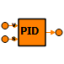

| n | INTEGER | 1 | Dimension of inputs and outputs | - |
| s_out | PORTS_LIB.analog_signal | (n = n) | OUT | Controlled output signal | |
| s_set | PORTS_LIB.analog_signal | (n = n) | IN | Set point signal | |
| s_var | PORTS_LIB.analog_signal | (n = n) | IN | Controlled variable signal |
| Td[n] | REAL | 0.1 | Rate or derivative time | s | |
| Ti[n] | REAL | 100 | Integrator time or reset time | s | |
| alpha[n] | REAL | 0.1 | 0,1 | Derivative filter parameter | - |
| beta[n] | REAL | 1 | 0,1 | Weight factor for set point changes in P output | - |
| end_pos | ENUM EndPosBehaviour | end_I | End position behaviour | - | |
| gamma[n] | REAL | 0.1 | Ratio between the time constant for the antiwindup and the integration time | - | |
| k[n] | REAL | 1 | Proportional gain of the controller | - | |
| u_max[n] | REAL | 1 | High limit of output | - | |
| u_min[n] | REAL | 0 | Low limit of output | - |
| e[n] | REAL | Input error | - | ||
| es[n] | REAL | Saturation error | - | ||
| r[n] | REAL | Set point | - | ||
| u[n] | REAL | Output | - | ||
| v[n] | REAL | Unbounded output | - | ||
| vi[n] | REAL | Integral part of the output | - | ||
| vil[n] | REAL | Limited integral part of the output | - | ||
| y[n] | REAL | Measured variable | - | ||
| yf[n] | REAL | Filtered variable | - |
Document generated automatically (Date: 2019:01:23, Time: 00:18:46)